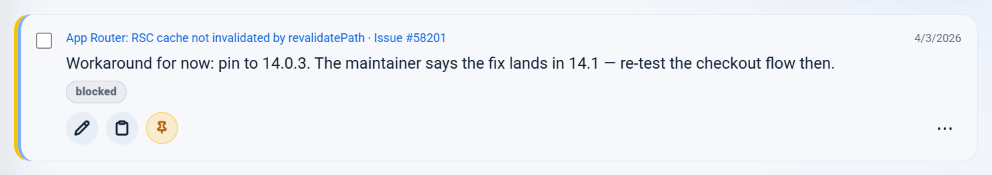
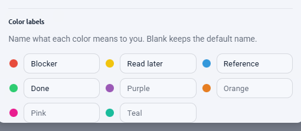
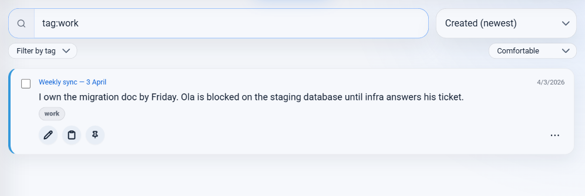
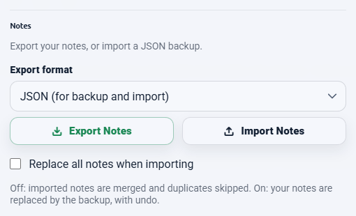

Definition
What a commonplace book is
A personal collection of passages worth keeping, gathered from whatever you read.
Quotations, arguments, definitions, turns of phrase, recipes, remedies, jokes — anything the keeper encountered and wanted to hold on to. The name comes from the Latin locus communis, a general theme or heading under which such passages were gathered.
The crucial distinction, and the one that makes the format worth reviving: a commonplace book records what you read. A diary records what you did. One is organised by theme and mostly consists of other people's words; the other is organised by date and consists of yours. You can keep both, and they do different jobs.
Background
A short history
Commonplacing was mainstream intellectual practice in early modern Europe, taught in schools and expected of educated readers. Erasmus recommended it to students in the early sixteenth century; by the seventeenth and eighteenth it was close to universal among people who wrote for a living.
The most famous refinement belongs to John Locke, who devised an indexing scheme so entries could be found again in a book filled in no particular order — the practical problem every note-keeper eventually hits. His method was published in English in 1706 as A New Method of Making Common-Place-Books, and it is essentially a hand-built search index.
The practice never entirely died. W. H. Auden published his own as A Certain World: A Commonplace Book in 1970, describing it as a kind of autobiography assembled from other people's writing — which is a fair description of what a good one becomes.
What is worth taking from the history is not the ledger or the leather binding. It is the two rules that made it work: capture what struck you, and keep track of where it came from. Every modern version that fails, fails on the second one.
The problem
Why the digital version usually fails
Copy, paste, and the source is gone.
A physical commonplace book had a built-in advantage nobody noticed at the time: copying a passage by hand was slow enough that writing "Hume, Enquiry, §4" underneath cost almost nothing by comparison. The overhead of attribution was invisible against the overhead of transcription.
Digitally, that ratio inverts. Copying is instant; attribution is now the slow part. So it gets skipped — not through carelessness but through simple economics, and skipped hardest exactly when you are reading fast and collecting most.
The result is a familiar file:
- Forty passages, no sources.
- No way to tell the peer-reviewed one from the forum comment.
- Nothing quotable, because quoting requires attribution.
- Search that only finds text you can already remember the wording of.
- Half of the original pages rewritten or gone, with no record of what they said.
The fix is not more discipline. It is making attribution cost nothing again, by attaching the source automatically at the moment of capture.
Method
Setting one up
NotePin stores a piece of text with a web address attached, which is structurally what a commonplace entry is. The setup is short.
- Install NotePin on Chrome or Edge.
- When you find a passage worth keeping, select it, right-click, and choose Save to NotePin. The source address is attached automatically.
- Before saving, add your own line underneath — why it struck you, or what you disagree with. This is the single habit that separates a useful commonplace book from a pile of quotes.
- Pick a colour. Do not overthink it; see the template below.
- Save. Do not file it anywhere — entries group themselves by the site they came from.

Entries hold up to 2,000 characters, which is roughly three or four paragraphs — enough for a substantial passage plus your commentary. A counter appears once you pass 1,000. Line breaks are preserved, so a quoted list stays a list.
Method
A colour template that works
Eight colours are available — red, yellow, blue, green, purple, orange, pink, and teal — and each can be given your own name in Settings → Color labels. Those names then show on the swatches and in the board's filters, so you never have to remember what purple meant.
The scheme below is a starting point rather than a prescription. It sorts by what you intend to do with an entry, which turns out to be more durable than sorting by subject.

| Colour | Name it | For |
|---|---|---|
| Blue | Quote | A passage worth reproducing as written. |
| Green | Idea | Something that changed how you think about a problem. |
| Red | Disagree | Wrong, but usefully wrong. The best entries live here. |
| Yellow | Check | A claim you want to verify before relying on it. |
| Purple | Use in writing | Earmarked for something you are working on. |
| Teal | Definition | A term explained better here than anywhere else. |
Two colours are deliberately left spare. You will discover a category you did not anticipate, and having somewhere to put it beats reorganising the other six.
Method
Tagging by theme
Colours handle intent. Tags handle subject — and subjects are what Locke's index existed to solve.
Up to five tags per entry, 24 characters each, typed comma-separated in the note form. The
useful discipline is to tag by theme, not by source. The site an entry came
from is already recorded and already groups itself; adding wikipedia as a tag
tells you nothing new. Adding attention or rome or
pricing creates the cross-cutting thread that a pile of quotes otherwise lacks.

tag: query pulls one theme out of everything.
Typing tag:rome filters to that theme; clicking a tag chip on an entry does it
for you. That is Locke's index, without the ruled margins.
Method
Rereading it
A commonplace book you never reopen has failed at its only job. The board is where rereading happens.
- Search covers the passage text, the page title, the full address, the domain, and the tags — so you can find an entry by its wording, its subject, or its source.
- Sort by Created, oldest first to read the collection as it accumulated. This is the closest thing to turning the pages in order, and it is where you notice how your interests moved.
- Filter by colour to reread one intent at a time. Every entry marked Disagree, read in one sitting, is a genuinely useful exercise.
- Filter by domain to see everything you kept from one publication.
- Pin the handful you return to most; pinned entries sort above everything.
A monthly pass sorted oldest-first, deleting what no longer earns its place, keeps the collection worth having. Deletes are undoable for five seconds, and a JSON backup makes the whole exercise reversible.
Your data
Keeping it yours
A commonplace book is a long-term object. Some of the entries in Auden's were decades old when he published them. So the important question is not how good the tool is today but whether you can leave it.

| Format | Best for | Can be imported back |
|---|---|---|
| JSON | Backups and moving between browsers | Yes |
| Markdown | Obsidian, Notion, any notes app | No |
| CSV | Excel, Google Sheets | No |
Markdown is the one that matters for a commonplace book. It is plain text, it will outlive every application currently installed on your computer, and it drops straight into Obsidian or any plain-text system if you later want something heavier.
The size limit, honestly
Browser sync gives an extension about 100 kB in total, and NotePin stops at 95 kB to stay clear of the edge. At typical entry lengths that is somewhere around 250 to 300 entries. A meter in settings turns amber at 80%, so you get warning well before anything fails.
For a working commonplace book that is usually a few years of genuinely selective collecting, and the ceiling enforces the selectivity that makes the format work. If you want an unbounded archive, export to Markdown periodically and keep the long tail in a plain-text system — capture here, archive there.
Your entries stay in your browser throughout. There is no server, no account, and nothing is sent anywhere. See the privacy page.
Answers
Common questions
What is a commonplace book?
A commonplace book is a personal collection of passages worth keeping — quotations, arguments, definitions, recipes, anything encountered in reading that the keeper wanted to hold on to. The name comes from the Latin locus communis, a general theme or heading under which such passages were gathered. It is a record of what you read, not of what you did.
How do I start a commonplace book?
Start by capturing rather than organising. Save passages as you encounter them, always with their source, and resist inventing categories until you have fifty or so entries and can see what themes actually recur. The historical method used broad subject headings; a digital version can use colours or tags for the same purpose, applied after the fact rather than decided in advance.
What is the difference between a commonplace book and a journal?
A journal records your own life and thoughts, organised by date. A commonplace book records other people's — passages you encountered and wanted to keep, organised by theme. A journal is chronological and personal; a commonplace book is thematic and mostly quotation, with your own commentary alongside rather than instead.
Can I export a digital commonplace book?
With NotePin, yes — in JSON, Markdown, or CSV. Markdown is the useful one here, because it imports cleanly into Obsidian, Notion, or any plain-text system, which means the collection is not trapped. Only JSON can be imported back into NotePin, so keep a JSON file if you want to be able to restore.
Where to go next
The capture habit this depends on is covered in saving selected text. If you are weighing this against a full notes suite, see the lightweight alternative comparison. The manual's backup section has the export detail.